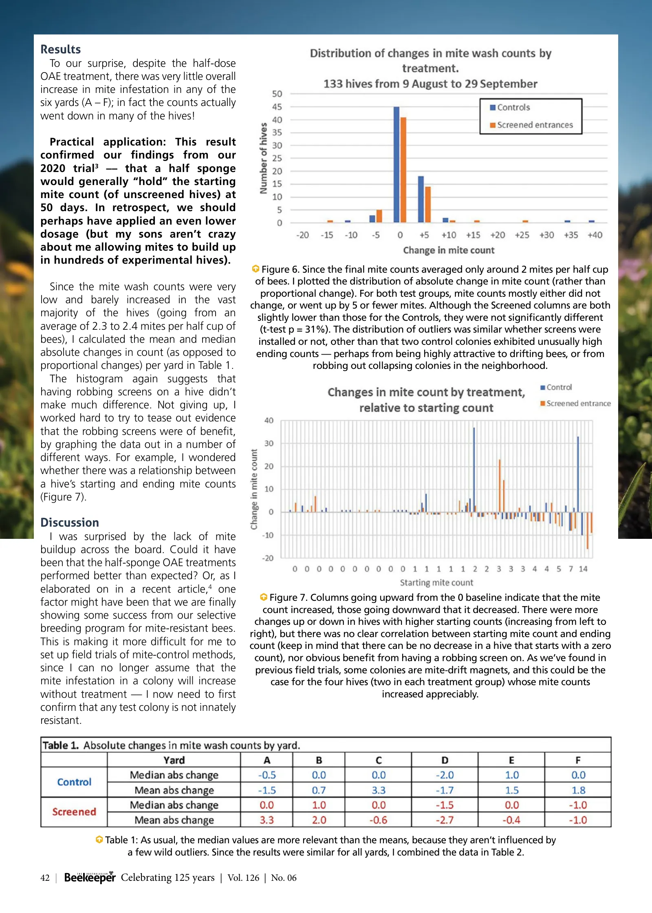

Results
To our surprise, despite the half-dose
OAE treatment, there was very little overall
increase in mite infestation in any of the
six yards (A – F); in fact the counts actually
went down in many of the hives!
Practical application: This result
confirmed our findings from our
2020 trial3 –– that a half sponge
would generally “hold” the starting
mite count (of unscreened hives) at
50 days. In retrospect, we should
perhaps have applied an even lower
dosage (but my sons aren’t crazy
about me allowing mites to build up
in hundreds of experimental hives).
Since the mite wash counts were very
low and barely increased in the vast
majority of the hives (going from an
average of 2.3 to 2.4 mites per half cup of
bees), I calculated the mean and median
absolute changes in count (as opposed to
proportional changes) per yard in Table 1.
The histogram again suggests that
having robbing screens on a hive didn’t
make much difference. Not giving up, I
worked hard to try to tease out evidence
that the robbing screens were of benefit,
by graphing the data out in a number of
different ways. For example, I wondered
whether there was a relationship between
a hive’s starting and ending mite counts
(Figure 7).
Discussion
I was surprised by the lack of mite
buildup across the board. Could it have
been that the half-sponge OAE treatments
performed better than expected? Or, as I
elaborated on in a recent article,4 one
factor might have been that we are finally
showing some success from our selective
breeding program for mite-resistant bees.
This is making it more difficult for me to
set up field trials of mite-control methods,
since I can no longer assume that the
mite infestation in a colony will increase
without treatment –– I now need to first
confirm that any test colony is not innately
resistant.
Figure 6. Since the final mite counts averaged only around 2 mites per half cup
of bees. I plotted the distribution of absolute change in mite count (rather than
proportional change). For both test groups, mite counts mostly either did not
change, or went up by 5 or fewer mites. Although the Screened columns are both
slightly lower than those for the Controls, they were not significantly different
(t-test p = 31%). The distribution of outliers was similar whether screens were
installed or not, other than that two control colonies exhibited unusually high
ending counts — perhaps from being highly attractive to drifting bees, or from
robbing out collapsing colonies in the neighborhood.
Table 1: As usual, the median values are more relevant than the means, because they aren’t influenced by
a few wild outliers. Since the results were similar for all yards, I combined the data in Table 2.
Figure 7. Columns going upward from the 0 baseline indicate that the mite
count increased, those going downward that it decreased. There were more
changes up or down in hives with higher starting counts (increasing from left to
right), but there was no clear correlation between starting mite count and ending
count (keep in mind that there can be no decrease in a hive that starts with a zero
count), nor obvious benefit from having a robbing screen on. As we’ve found in
previous field trials, some colonies are mite-drift magnets, and this could be the
case for the four hives (two in each treatment group) whose mite counts
increased appreciably.
42 |
Celebrating 125 years | Vol. 126 | No. 06